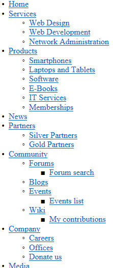
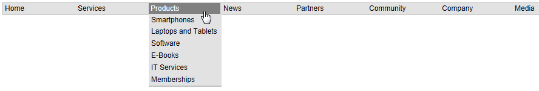
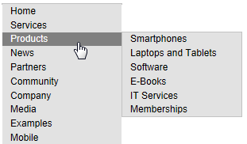

CMSListMenu
The CMSListMenu control allows you to create highly flexible website navigation menus. The control renders <UL> and <LI> tags generates the design based on CSS styles. The CMSListMenu control provides the following advantages:
The appearance of the control is fully configurable through CSS styles
Renders shorter HTML code than the CMSMenu control
Is fully XHTML compliant
List-based menus have good accessibility
Allows you to create drop-down menus only through CSS, with minimal JavaScript
Automatically displays a standard UL/LI list with links in browsers or readers that do not support CSS styles, so such users can still navigate the website
Web part equivalent (portal engine): CSS list menu
Getting started
The following is a step-by-step tutorial that shows how to use the CMSListMenu control to display a simple unstyled menu containing pages:
Create a new Web form somewhere in your web project.
Drag the CMSListMenu control from the toolbox onto the form.
The code of the CMSListMenu looks like this:
<cms:CMSListMenu ID="CMSListMenu1"runat="server"/>Save the web form.
Right-click the web form in the Solution explorer and select View in Browser.
The resulting page displays a UL/LI based menu like the following:

To see examples of more advanced menus rendered using CSS styles, continue the tutorial in the Appearance and styling sections:
Configuration
You can set the following properties for the CMSListMenu control:
|
CMSListMenu properties |
Description |
Sample value |
|
CSSPrefix |
Sets the prefixes added to the names of the control's CSS classes. Add prefixes for individual levels of the menu separated by semicolons (;). |
"main;submenu1;submenu2" |
|
DisplayHighlightedItemAsLink |
Indicates whether the control displays highlighted items as links. |
|
|
DisplayOnlySelectedPath |
Indicates whether the control displays all sub-menus or just the sub-menu under the highlighted (selected) item. |
|
|
EncodeMenuCaption |
Indicates whether the control HTML encodes the captions of menu items. Enable if you need to display pages whose names contain HTML code. |
|
|
FirstItemCssClass |
Specifies the CSS class applied to the first item on every menu level. |
"ListMenuFirstItem" |
|
HighlightedNodePath |
Path of the menu item that the control highlights. If empty, the control automatically uses the page's current alias path. |
"/products/PDAs" |
|
HoverCSSClassName |
Specifies the CSS class that defines the styles of the hover effect (for rendering drop-down menus). |
"Horizontal" |
|
ItemIdPrefix |
Prefix that the control adds to all element IDs in the rendered HTML code. Allows you to avoid conflicts when using multiple CMSListMenu controls on the same page. |
"submenu" |
|
LastItemCssClass |
Specifies the CSS class applied to the last item on every menu level. |
"ListMenuLastItem" |
|
LoadDataAutomaticaly |
Indicates whether the control automatically loads page data. True by default. If you set this property to false, you need to assign a custom DataSet into the DataSource property and then call the control's ReloadData method. |
|
|
OnMouseOutScript |
OnMouseOut script for menu items. You can use macro expressions here. |
|
|
OnMouseOverScript |
OnMouseOver script for menu items. You can use macro expressions here. |
|
|
OrderBy |
Gets or sets the ORDER BY clause of the SQL query that the control uses to load data. Important: The root of the displayed page tree (or sub-tree) must be first in the resulting order, otherwise the control may not display all pagescorrectly. You can ensure this by starting the Order by value with the NodeLevel column. |
"NodeLevel, NodeOrder" |
|
RenderCssClasses |
If set to false, the control only renders CSS classes for the first and last items on each menu level. |
|
|
RenderedHTML |
Gets or sets the HTML code rendered by the control. If you need to set this property manually, do so before the Render event (for example in the OnLoad event). |
|
|
RenderImageAlt |
Indicates whether the control renders ALT attributes for images in the menu (for XHTML compatibility). |
|
|
RenderItemID |
Indicates whether the control renders a unique ID for every menu item. |
|
|
RenderLinkTitle |
Indicates whether the control renders TITLE attributes for links, containing the corresponding page names (for better accessibility). |
|
|
UrlTarget |
Specifies the target frame for all menu links. |
"_blank" |
|
Common navigation properties |
Description |
Sample value |
|
ApplyMenuDesign |
Indicates whether the control applies page menu design settings. True by default. |
|
|
Columns |
Contains the names of columns that the control loads for pages (menu items) in addition to the default columns. If you need data from other columns, type their names separated by commas. Note: To find a full list of the default navigation columns, use the SQL queries debugging tool and inspect the query performed by your navigation control. |
"DocumentPageTitle, |
|
HideControlForZeroRows |
Indicates whether the control should be hidden when no data is loaded. Default value is False. |
|
|
HighlightAllItemsInPath |
Indicates whether the control highlights all items on the visitor's current path. |
|
|
SubmenuIndicator |
Path to an image displayed next to every menu item that contains sub-items. |
|
|
UseAlternatingStyles |
Indicates whether the control uses alternating styles for even and odd items on the same menu level. |
|
|
UseItemImagesForHiglightedItem |
Indicates whether the control uses the item image if the highlighted image is not specified. |
|
|
WordWrap |
Indicates whether text displayed by the control uses word wrapping. If disabled, text that is too long is replaced by 'nbsp'. |
|
|
ZeroRowsText |
Text shown if no records are found. This text is not visible when the control is hidden by the HideControlForZeroRows property. |
"No records found." |
|
Page filtering properties |
Description |
Sample value |
|
CheckPermissions |
Indicates if the control checks the permissions of the user viewing the page. If the value is false (default value) no permissions are checked. If true, the control only loads pages for which the user viewing the page has read permissions. |
|
|
ClassNames |
Specifies which page types the control loads and displays. Identify page types through their code names, separated by semicolons (;). You can use the * wildcard as a substitute for any number of characters. For example Product.* includes the page types Product.Camera, Product.CellPhone, Product.Computer etc. If the property is left empty, the control retrieves all page types by default. In the case of menu and navigation controls, only CMS.MenuItem pages are loaded by default. Note: If the control loads all page types (empty value), only the data from the View_CMS_Tree_Joined and the COM_SKU table (for product pages) are available in the retrieved data. The specific fields of individual page types are not included. You need to keep this in mind when writing the code of transformations, WHERE conditions, ORDER BY expressions etc. |
"cms.news" |
|
CombineWithDefaultCulture |
Indicates whether the control loads pages from the website's default culture version if the required pages are not available in the user's selected culture. Only applies if you do not set the TreeProvider property manually. |
|
|
CultureCode |
Specifies the culture code of the pages that the control loads. If not specified, the control automatically uses the preferred culture of the user viewing the page. |
"en-us" |
|
DataSource |
Allows you to manually assign a DataSet or DataTable containing the pages that the control displays. You do not need to set this property for standard scenarios. |
|
|
FilterOutDuplicates |
Indicates if the control filters out duplicated (linked) pages from the data. |
|
|
MaxRelativeLevel |
Specifies the maximum number of content tree sub-levels from which the control displays pages. This number is relative, i.e. counted from the location of the page where the control is placed, not from the root of the website. Enter -1 to load all child pages. |
|
|
Path |
Path of the pages that the control loads. |
|
|
SelectOnlyPublished |
If enabled, the control only loads published pages. |
|
|
TreeProvider |
Gets or sets the TreeProvider object used by the control to access page data. If you do not assign a TreeProvider object, the control automatically creates a new instance. |
|
CMS Base control properties |
Description |
Sample value |
|
CacheDependencies |
List of the cache keys on which the control's cached data depends. When the specified cache items change, the control clears its cache. Each item (dependency) must be on one line. If you leave this property empty, the control uses default dependencies. See also: Setting cache dependencies, Configuring caching |
cms.user|all |
|
CacheItemName |
Sets the name of the cache key used to store the control's content. If you leave the value empty, the system generates a default name containing variables, such as the control ID, the selected culture and the name of the user who loaded the page. The system cache is shared by all pages in your application, so cache item names representing different data must be unique globally. If you have multiple controls that load the same data, you can share the cache keys between the controls (optimizes loading of content and avoids redundant data in the cache). If the content displayed by the control depends on variables, such as URL parameters, you can set a custom name dynamically in the page's code behind. See also: Caching the data of page components, Configuring caching |
"CMSRepeaterNews" + |
|
CacheMinutes |
Sets the number of minutes for which the control caches content retrieved from the database.
Allows you to set up caching of content so that the control doesn't have to retrieve content from the database on each request. The caching mechanism uses absolute expiration time. This means that cache items expire after a specified time period even if the page containing the control wasn't requested. See also: Caching the data of page components, Configuring caching |
|
|
FilterControl |
Gets or sets the filter control used to limit the data read by the control. |
|
|
FilterName |
Gets or sets the code name of the filter control used to limit the data read by this control. |
|
|
OrderBy |
Gets or sets the ORDER BY clause of the SQL query that the control uses to load data. |
"NewsReleaseDate DESC" |
|
SelectedColumns |
Database table columns that the control loads for pages, separated by commas ( , ). If null or empty, the control loads all available columns. |
|
|
SiteName |
Specifies the code name of the Kentico website for which the control loads data. |
|
|
StopProcessing |
If true, the control stops all processing — does not load or display any data or other HTML output. |
|
|
TopN |
Specifies the maximum number of database records that the control loads. |
|
|
WhereCondition |
Gets or sets the WHERE clause of the SQL query that the control uses to loads data. |
"ProductPrice > 100" |
Appearance and styling
The appearance of the CMSListMenu control is determined by its properties and CSS classes. Use the following properties to assign CSS classes:
|
Property name |
Description |
|
FirstItemCssClass |
Specifies the CSS class applied to the first item on every menu level. |
|
HoverCSSClassName |
Specifies the CSS class that defines the styles of the hover effect (for rendering drop-down menus). The value is case sensitive. |
|
LastItemCssClass |
Specifies the CSS class applied to the last item on every menu level. |
You can use the following default CSS classes to modify the design of the CMSListMenu:
|
CSS class name |
Applies to |
|
CMSListMenuUL |
UL elements. |
|
CMSListMenuLI |
LI elements. |
|
CMSListMenuLink |
A elements. |
|
CMSListMenuHighlightedLI |
LI elements for highlighted items. |
The recommended place to define these classes is in a Kentico stylesheet using the CSS stylesheets application.
You can apply stylesheets to:
Entire websites
Individual pages that contain the control
Creating a horizontal drop-down menu
The following example demonstrates how to use the CMSListMenu to render a horizontal drop-down menu. To implement the example, please follow the steps in the Getting started section and then continue with the following steps:
Set the CMSListMenu's HoverCSSClassName property value to: Horizontal
<cms:CMSListMenu ID="CMSListMenu1"runat="server"HoverCSSClassName="Horizontal"/>Add the following style definitions inside the page's <head> element:
<style type="text/css"media="screen">/* Horizontal menu class definitions*/.Horizontal { BORDER-RIGHT: #c2c2c2 1px solid; BORDER-TOP: #c2c2c2 1px solid; FONT-SIZE: 12px; FLOAT: left; BORDER-LEFT: #c2c2c2 1px solid; WIDTH:100%; BORDER-BOTTOM: #c2c2c2 1px solid; FONT-FAMILY: Arial; BACKGROUND-COLOR: #e2e2e2 }.Horizontal UL { PADDING-RIGHT: 0px; PADDING-LEFT: 0px; PADDING-BOTTOM: 0px; MARGIN: 0px; WIDTH:100%; PADDING-TOP: 0px; LIST-STYLE-TYPE: none }.Horizontal LI { BORDER-RIGHT: #e2e2e2 1px solid; PADDING-RIGHT: 0px; BORDER-TOP: #e2e2e2 1px solid; DISPLAY: inline; PADDING-LEFT: 0px; FLOAT: left; PADDING-BOTTOM: 0px; BORDER-LEFT: #e2e2e2 1px solid; PADDING-TOP: 0px; BORDER-BOTTOM: #e2e2e2 1px solid }.Horizontal A { PADDING-RIGHT: 3px; DISPLAY: block; PADDING-LEFT: 3px; PADDING-BOTTOM: 2px; MARGIN: 0px; WIDTH: 112px; COLOR: black; PADDING-TOP: 2px; BACKGROUND-COLOR: #e2e2e2; TEXT-DECORATION: none }.Horizontal A:hover { BACKGROUND: #808080no-repeat right bottom; COLOR: white }.Horizontal UL UL { Z-INDEX:500; WIDTH: 120px; BORDER-BOTTOM: #c2c2c2 2px solid; POSITION: absolute }.Horizontal UL UL LI { CLEAR: left; DISPLAY: block; POSITION: relative }.Horizontal UL UL UL { BORDER-RIGHT: #c2c2c2 2px solid; LEFT:100%; BORDER-BOTTOM: white 0px solid; TOP: -1px }.Horizontal UL UL { DISPLAY: none }.Horizontal UL LI:hover UL UL { DISPLAY: none }.Horizontal UL UL LI:hover UL UL { DISPLAY: none }.Horizontal UL LI:hover UL { DISPLAY: block }.Horizontal UL UL LI:hover UL { DISPLAY: block }.Horizontal UL UL UL LI:hover UL { DISPLAY: block }</style>These CSS styles generate a horizontal drop-down menu. The example uses the local <head> element only for convenience. If you wish to use the control on a Kentico website, it is recommended to define the CSS classes in the website's stylesheet in the CSS stylesheets application.
Save the web form.
Right-click the web form in the Solution explorer and select View in Browser.
The resulting page displays the following menu:

Creating a vertical drop-down menu
The following example demonstrates how to use the CMSListMenu to render a vertical drop-down menu. To implement the example, please follow the steps in the Getting started section and then continue with the following steps:
Set the CMSListMenu's HoverCSSClassName property value to: Vertical
<cms:CMSListMenu ID="CMSListMenu1"runat="server"HoverCSSClassName="Vertical"/>Add the following style definitions inside the page's <head> element:
<style type="text/css"media="screen">/* Vertical menu class definitions*/.Vertical { BORDER-RIGHT: #c2c2c2 1px solid; BORDER-TOP: #c2c2c2 1px solid; FONT-SIZE: 12px; BORDER-LEFT: #c2c2c2 1px solid; WIDTH: 150px; BORDER-BOTTOM: #c2c2c2 1px solid; FONT-FAMILY: Arial; BACKGROUND-COLOR: #e2e2e2 }.Vertical UL { PADDING-RIGHT: 0px; PADDING-LEFT: 0px; PADDING-BOTTOM: 0px; MARGIN: 0px; PADDING-TOP: 0px; LIST-STYLE-TYPE: none }.Vertical LI { POSITION: relative; FLOAT: left; WIDTH:100% }.Vertical A { PADDING-RIGHT: 0px; BACKGROUND-POSITION: 0px50%; DISPLAY: block; PADDING-LEFT: 10px; PADDING-BOTTOM: 2px; MARGIN: 0px; WIDTH: 140px; COLOR: black; PADDING-TOP: 2px; BACKGROUND-REPEAT: no-repeat; BACKGROUND-COLOR: #e2e2e2; TEXT-DECORATION: none }.Vertical A:hover { BACKGROUND: #808080no-repeat 0px50%; COLOR: white }.Vertical UL UL { BORDER-RIGHT: #c2c2c2 1px solid; BORDER-TOP: #c2c2c2 1px solid; Z-INDEX:100; LEFT:100%; BORDER-LEFT: #c2c2c2 1px solid; WIDTH:100%; BORDER-BOTTOM: #c2c2c2 1px solid; POSITION: absolute; TOP: -1px }.Vertical UL UL { DISPLAY: none }.Vertical LI:hover UL UL { DISPLAY: none }.Vertical UL LI:hover UL UL { DISPLAY: none }.Vertical LI:hover UL { DISPLAY: block }.Vertical UL LI:hover UL { DISPLAY: block }.Vertical UL UL LI:hover UL { DISPLAY: block }</style>These CSS styles generate a vertical drop-down menu. The example uses the local <head> element only for convenience. If you wish to use the control on a Kentico website, it is recommended to define the CSS classes in the website's stylesheet in the CSS stylesheets application.
Save the web form.
Right-click the web form in the Solution explorer and select View in Browser.
The resulting page displays the following menu:
